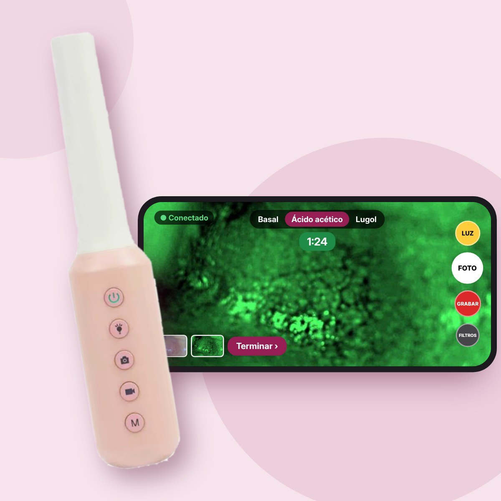
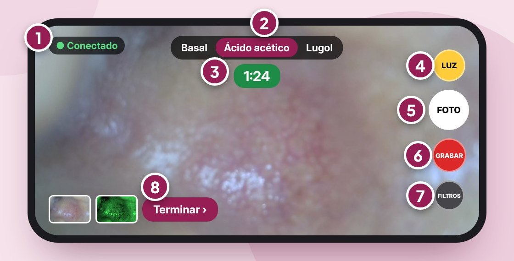
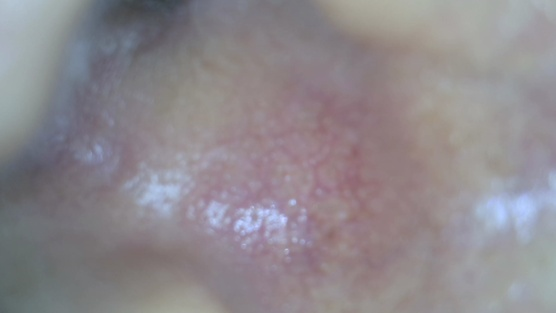
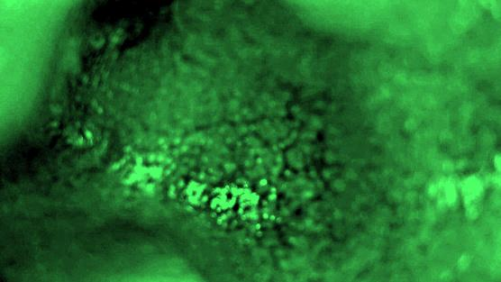
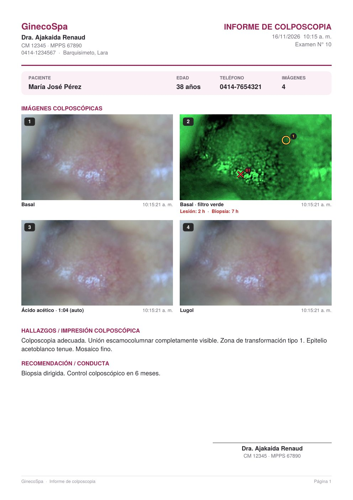
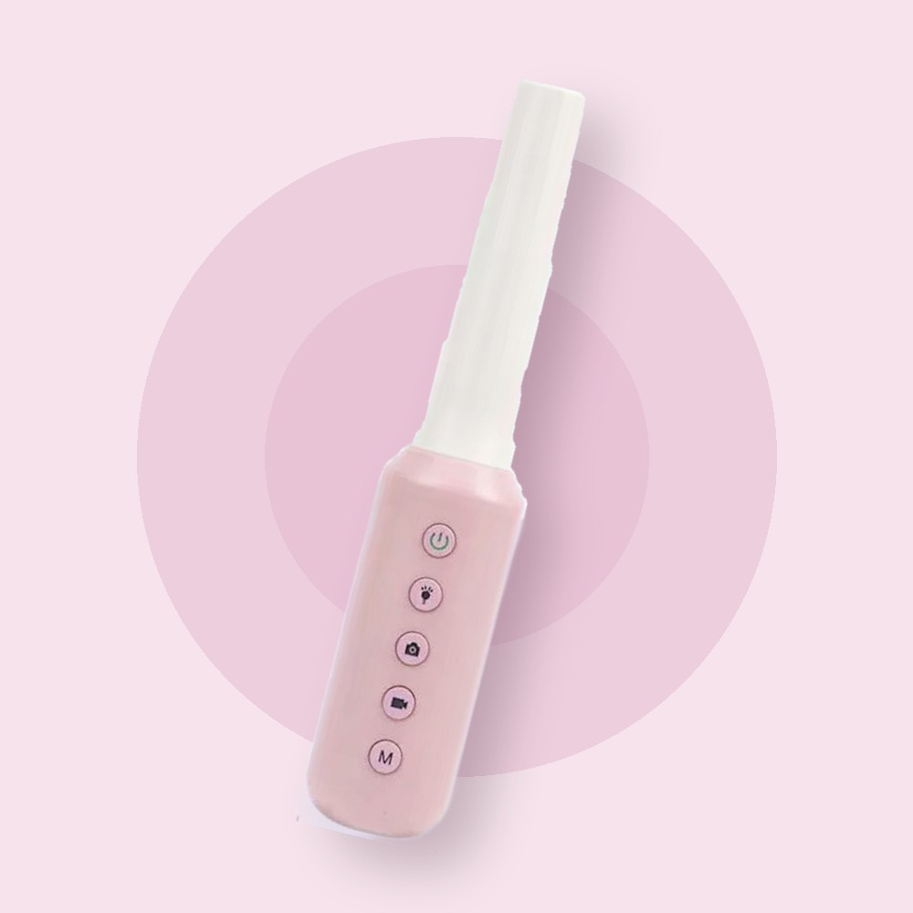

Video en vivo, cronómetro del ácido acético, filtro verde con realce de vasos, marcado de lesiones y biopsias, consentimiento firmado y envío del informe por WhatsApp. Todo en español.
Android 8 o superior · Funciona sin internet · Los datos se quedan en tu teléfono
Desde conectar el equipo hasta enviar el informe en PDF por WhatsApp: configuración del consultorio, consentimiento con firma, fases del examen, filtro verde y marcado de lesiones.

No es solo un cambio de color: la app aumenta el contraste local del canal verde para que el patrón vascular, el mosaico y el punteado se vean definidos. Con un toque, en vivo y en la foto.


Imágenes reales del equipo. Herramienta de visualización: no sustituye el criterio del médico.
Enciende el colposcopio y conéctate a su WiFi. No hace falta apagar los datos del teléfono.
Nombre, edad y teléfono de la paciente. Ella firma el consentimiento con el dedo.
Basal, ácido acético y Lugol. Cronómetro con foto automática al minuto y serie de la reacción.
Toca la foto donde está la lesión o la biopsia; la posición horaria se calcula sola.
PDF de una página con fotos, hallazgos y firma. Se envía por WhatsApp con un toque.
Registro de la paciente en segundos, consentimiento firmado con el dedo y cierre del examen con hallazgos en terminología IFCPC.
Así se ve la app durante el examen, con una imagen real tomada por el equipo.

Una página con tus datos, tu logo y tu firma.
Fotos con su fase y hora: basal, ácido acético (con el tiempo exacto) y Lugol.
Lesiones y biopsias marcadas sobre la foto, con su posición horaria.
Hallazgos y conducta con terminología IFCPC, eligiendo de una lista.
Consentimiento firmado en la segunda página. Pesa menos de 100 KB.
Imagen del colposcopio a pantalla completa, con control de la luz y grabación de video.
Círculo y cruz en pantalla para centrar el orificio cervical. No aparece en las fotos.
Avisa antes del minuto, marca la ventana ideal y alerta cuando el efecto se desvanece.
Al tomar la foto elige el cuadro más nítido y avisa si quedó movida u oscura.
Durante el ácido acético guarda imágenes cada 20 segundos para ver la evolución.
Busca por nombre o teléfono y reabre cualquier examen o informe.
Los botones físicos de foto y grabación del colposcopio funcionan con la app.
Los datos de las pacientes se guardan solo en tu teléfono.

Colposcopio digital inalámbrico: transmite el video por su propia red WiFi al teléfono, con luz LED y botones físicos de foto y grabación que la app reconoce.
Compacto y liviano, cabe en la mano: se maneja con una sola mano mientras ves la imagen en el teléfono.
350 $ en divisas, con la app incluida.
Consultar disponibilidadNo. La app trabaja con el WiFi propio del colposcopio. El internet solo hace falta para enviar el informe.
No. A diferencia de la app original del equipo, esta usa el WiFi del colposcopio sin quitarle el internet al teléfono.
Por ahora solo en Android 8 o superior.
No. Es una herramienta para documentar y visualizar mejor el examen. El diagnóstico lo hace el médico.
Sí. En Ajustes cargas el nombre del consultorio, médico, número de colegio, dirección y logo; salen en cada informe.
Escríbenos y te mostramos el equipo y la app en una videollamada. Precio: 350 $ en divisas.